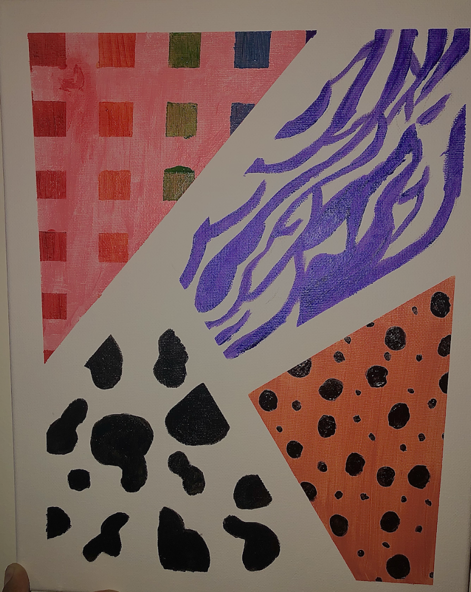
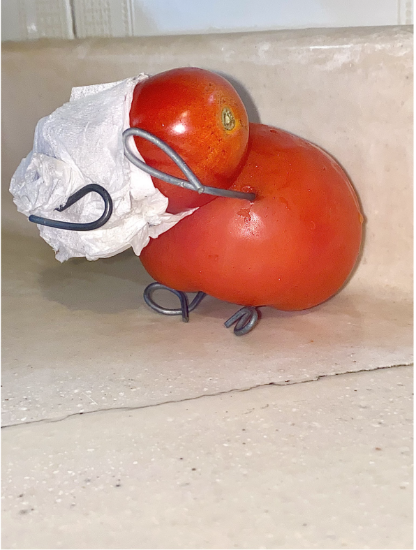
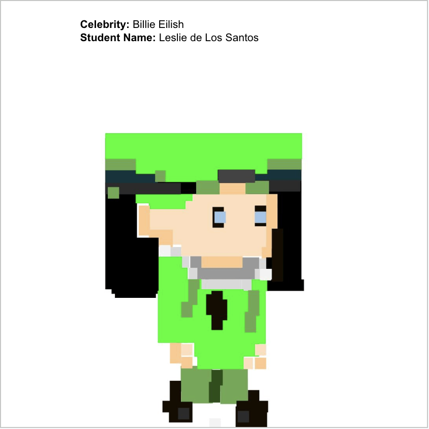
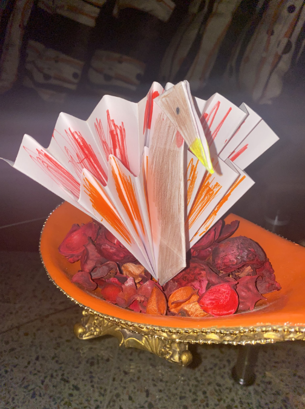
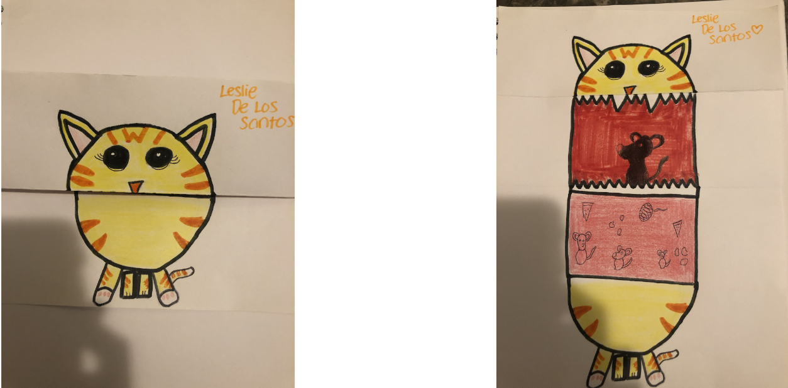
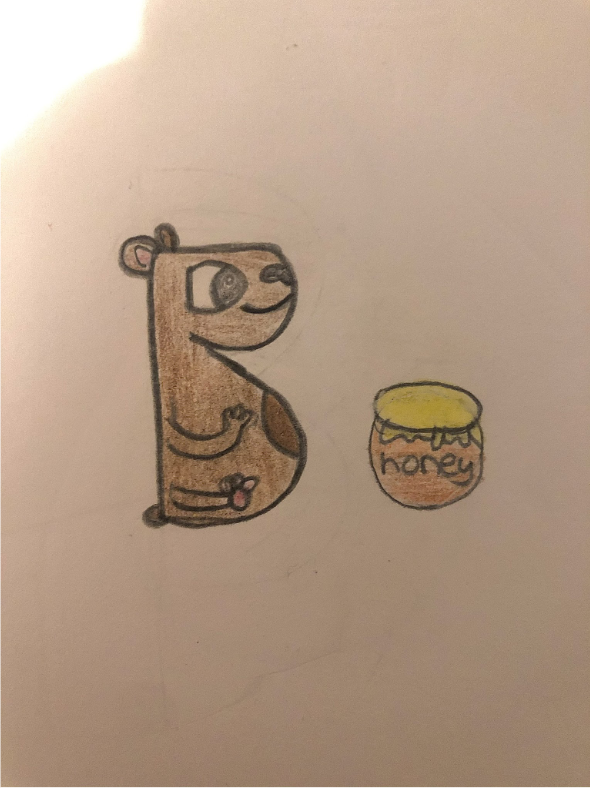

I think animal prints are really unique and pretty, therefore I attempted to do a design with a variety of them while also trying to put a twist to it and add color. The pink area was supposed to be leapord print but I wasn't able to do it because I didnt have enough tools.
This piece of art was made of baby tomatoes that I had home. I was searching through my Refrigerator and came across these tomatoes. Since there was different sizes, I came up with the idea to have a mommy and a baby.
Back then during quaretine, my favorite artist was Billie Eilish. This piece of art was created because my teacher asked us to make a moving animation, aka GIF, so I recreated Billie Eilish off an app.
During this time, we were learning all about origami and how to create different things with paper. Since it was November and thanksgiving was coming up, I decided to create an origami turkey.
In this assignment we used some origami techniques in order to show two sides of a drawing depending of how the paper is folded.
In this assignment we were asked to use our creativity and create a drawing using a letter or shape. I decided to use the letter B and it reminded me of a Bear. Therefore, I drew a bear next to a jar of honey
